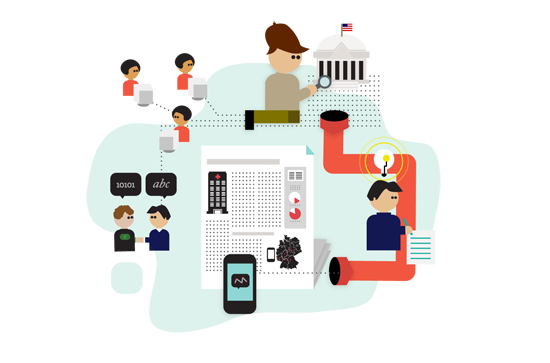

入门

什么是数据新闻？它有什么样的潜力？有什么限制？从哪儿来？在这一部分我们能够看到数据新闻是什么以及它对于新闻机构来说意味着什么。保罗·布拉德肖（Paul Bradshaw，伯明翰城市大学）和米尔科·洛伦兹（Mirko Lorenz，德国之声）会介绍一些数据新闻所独具的特性。领先的数据新闻记者向我们讲述为什么他们认为数据新闻十分重要，还有哪些是他们最喜欢的案例。最后莉莉安娜·博内格鲁（Liliana Bounegru，欧洲新闻中心）会把数据新闻放在更广阔的历史背景下进行解读。
什么是数据新闻？它有什么样的潜力？有什么限制？从哪儿来？在这一部分我们能够看到数据新闻是什么以及它对于新闻机构来说意味着什么。保罗·布拉德肖（Paul Bradshaw，伯明翰城市大学）和米尔科·洛伦兹（Mirko Lorenz，德国之声）会介绍一些数据新闻所独具的特性。领先的数据新闻记者向我们讲述为什么他们认为数据新闻十分重要，还有哪些是他们最喜欢的案例。最后莉莉安娜·博内格鲁（Liliana Bounegru，欧洲新闻中心）会把数据新闻放在更广阔的历史背景下进行解读。